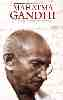

February 2000
Maps ||
Mud Walls ||
Hasan's Introduction+ ||
50th Republic Day ||
Mahatma Gandhi CD
 I've set up a site of "
Maps of India," which I've announced to some others already. The
site contains about 20 maps covering an overview, physical
administrative, linguistic, historic, states maps of Bihar and Madhya
Pradesh, and city map of Patna. The historic ones are linked from the
Encyclopedia Britanica, and if you wish to see the EB originals you
will likely need to use your University of Virginia proxy login. The
historic maps are of the Indus, Ashoka, Guptas, Sultanate, Mughals, 2
British, and states reorganization. Go to this site
I've set up a site of "
Maps of India," which I've announced to some others already. The
site contains about 20 maps covering an overview, physical
administrative, linguistic, historic, states maps of Bihar and Madhya
Pradesh, and city map of Patna. The historic ones are linked from the
Encyclopedia Britanica, and if you wish to see the EB originals you
will likely need to use your University of Virginia proxy login. The
historic maps are of the Indus, Ashoka, Guptas, Sultanate, Mughals, 2
British, and states reorganization. Go to this site
http://www.lib.virginia.edu/area-studies/SouthAsia/maps/indiamap.html
Alternatively, click on the map at the South Asia Library Resources and then click again
to see the Maps of India. This portal is at
http://www.lib.virginia.edu/area-studies/SouthAsia/southAsia.html
Also, maps of India's states, elevation, and languages may be found under
INDIA at the
Ask Asia site
http://www.askasia.org/image/maps/maps.htm
|
|

|
Mud Walls online. The village of Karimpur
was first investigated by the Wisers in the 1930s and reported
in their books on the Hindu jajmani system and "Behind Mud Walls." Part of the Wisers' photographic
record of their experiences and the updating by others such as Susan Wadley are now
available online, called "
Looking Behind Mud Walls" at a very
interesting website, with slide shows, etc. at
http://www.maxwell.syr.edu/southasiacenter/karimpur/
This site might serve as a web model for placing other South Asia
Social Science educational graphics, narratives, and photographic
materials on the web, though one might hope old photos and slides
might be enhanced and cleared up using new graphic manipulation
techniques. |
|
 Mushirul Hasan provides a very informative and thoughtful introduction to Mohamed Ali's autobiography,
My Life: A Fragment. See the Cover, Table of Contents,
Preface and especially the Introduction to that book at
Mushirul Hasan provides a very informative and thoughtful introduction to Mohamed Ali's autobiography,
My Life: A Fragment. See the Cover, Table of Contents,
Preface and especially the Introduction to that book at
http://www.lib.virginia.edu/area-studies/SouthAsia/Ideas/lika/iframe.html
Mushirul Hasan's
23 Feb 2000 article
on the UVa Medical School's "Virginia Children's
Connection" project in Bihar,
"
Miracle in Giridih,"
may be found at the
Indian Express site.
Professor Hasan's previous IE article titled, "Hindu ethos, Muslim fears," on the topic of
rewriting Indian history, is available at
http://www.indian-express.com/ie/daily/20000209/ied09045.html
In
this connection, see also a 20Feb2000 H-Asia message about the protest
against
"
Censorship of Indian Historical Research."
|
|
 The 50th Republic Day special issue
New Republic / Old Civilization,
of the
Times of India is available in
print in Alderman Library Periodicals Room and online. [This time-sensitive
web page was written in Feb. 2000; it's information may no longer be valid]
http://www.timesofindia.com/today/pagerepu.htm
The 50th Republic Day special issue
New Republic / Old Civilization,
of the
Times of India is available in
print in Alderman Library Periodicals Room and online. [This time-sensitive
web page was written in Feb. 2000; it's information may no longer be valid]
http://www.timesofindia.com/today/pagerepu.htm
See Mahasweti Devi's
The India I dream of or
Shiv Visvanathan's
The Bomb and the Future of India
|
|

|
The Mahatma Gandhi CD is an interactive multimedia CD, with
30 minutes of film footage, over 550 photographs, and
15 minutes of Gandhiji's voice. The CD includes the
Electronic Book consisting of the 100 volumes of the
Collected Works of Mahatma Gandhi, more than 50,000
pages with comprehensive indexing. For more,
see this
mirrored Government of India
Publications Division web page.
The Mahatma Gandhi CD is being added to the University of
Virginia
library collection.
|
|
Back to the top
Return to
South Asia Library Resources OR
Ideas and Writings on South Asia
Webbed by Philip McEldowney
Last update: .
Count:
|